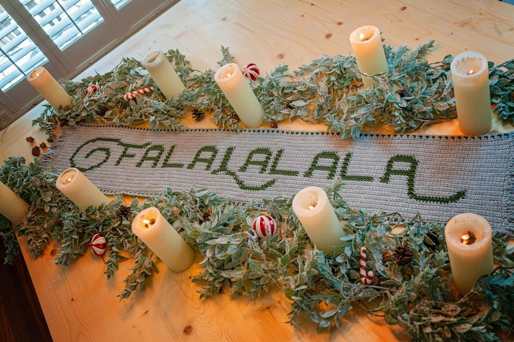

Worsted Weight Shop →
Tonja Pe Benito from Pink Plumeria Maui
Worsted Weight Shop →
Crystal Bucholz from Crystalized Designs
Krisztina from K.A.M.E. Crochet
Worsted Weight
Shop →
6.00mm Tunisian Hook Shop →
Krisztina from K.A.M.E. Crochet
Bulky Weight
Krisztina from K.A.M.E. Crochet
Brianna Iaropoli from Life and Yarn
Worsted Weight
Shop →
Rebekah Haas
Worsted Weight Shop →
Katy from KT and the Squid
Worsted Weight
Shop →
Tamara Kelly from Moogly

Worsted Weight Shop →
Briana K Designs
Worsted Weight
Shop →
Sam from Casale Crafts
Super Bulky Weight
Miranda from Crazy4CrochetMomma